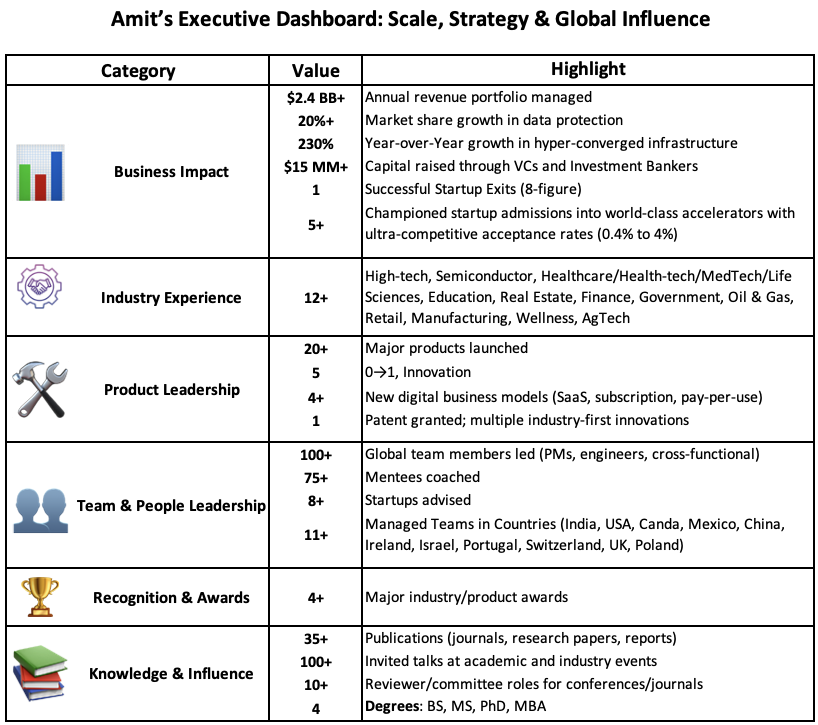

Professional Body of Work



Product Portfolio
Here is a list of Software and Hardware products, both in the Enterprise and Consumer space, that I had the pleasure to work on throughout my career (20+ products and on average 3 releases/iterations per product).

Somatix's HealthTech Products
Somatix's SafeBeing and SmokeBeat

Dell EMC's Data Protection Products

Dell EMC Integrated Data Protection Appliances (IDPA)

Riverbed Technology's SteelFusion

NetApp's Data Protection Products
SnapMirror and SnapVault

Visualization Portfolio
Links to download my Visualization and Analytics Portfolio – link
Visualization Collage

My primary interest is computer graphics and analytics, specifically information visualization and scientific visualization of large, multi-dimensional datasets in ways that allow viewers to rapidly and accurately explore, analyze, compare, validate, monitor, and discover within data. Effective representation of large, complex collections of information presents a difficult challenge. Visualization uses a visual interface to support efficient analysis and discovery within the data.